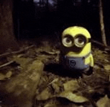
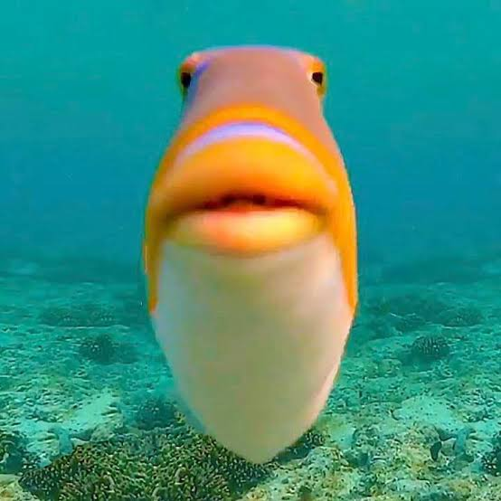
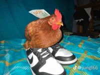
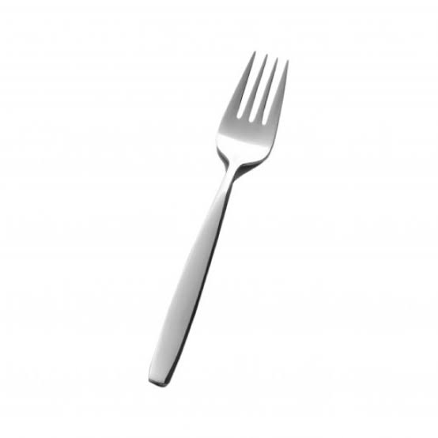
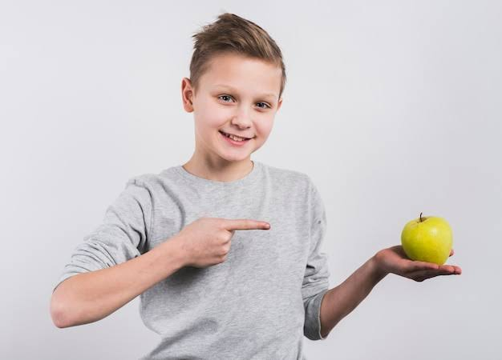
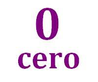
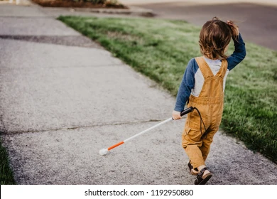
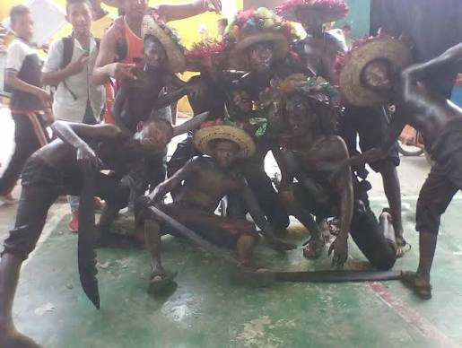
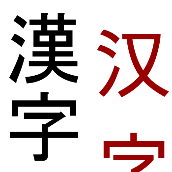
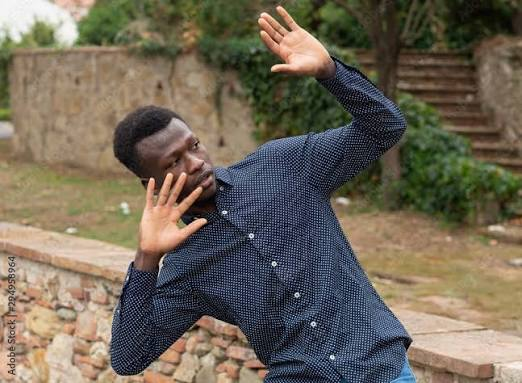

Portal de Chistes del Salón
Bastian Nefi Quipo Mamani

¿Qué le dice un zapato a otro zapato?

¿Dónde viven los minions?
¿Qué hace un programador cuando hace mucho frío?
Sullca Caballero Jean Pol
¿Qué hace un perro con un taladro?
¿La diferencia entre una pizza y un judío?
Gianfranco Maximiliano Quispe Pinto

¿Qué le dice un pez a otro pez?
Hospital en chino:
¿Por qué nunca debes de discutir con un DJ?

El colmo del gallo:
Frank Puma Ucharo
¿Qué hace Drácula con un tractor?

El colmo de un tenedor:

A un niño lo llamaban manzana, ¿por qué?
Quispe Cusihuaman Sebastian Cristian

¿Qué le dice un cero a otro cero?
Diferencia entre negro y bicicleta:
Mi abuelo falleció durmiendo como él quería:
Pereyra Rumaja Armando
¿En qué se parece un cura a un árbol de navidad?
¿Dónde está Juanito tras pisar una mina?
¿Por qué no se ven tantas personas negras en un crucero?
Araoz Tapia Sebastian Joaquin

Una niña ciega ve una película y no pudo verla, ¿por qué?
¿Qué hace un huérfano en navidad?

15 africanos contra una pared blanca:

¿Qué hace saltar a una persona triste?
Edmundo Yabar Yepez

Prostituta en chino:
¿Cuál es la mayor cantidad de desaparecidos en África?
Chino Hilares Shanne Alison

¿Qué hace un tornado en África?